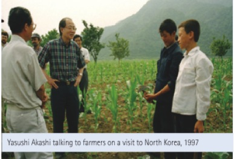
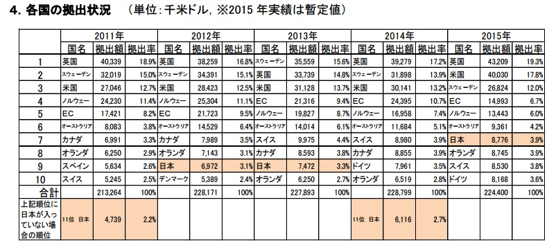
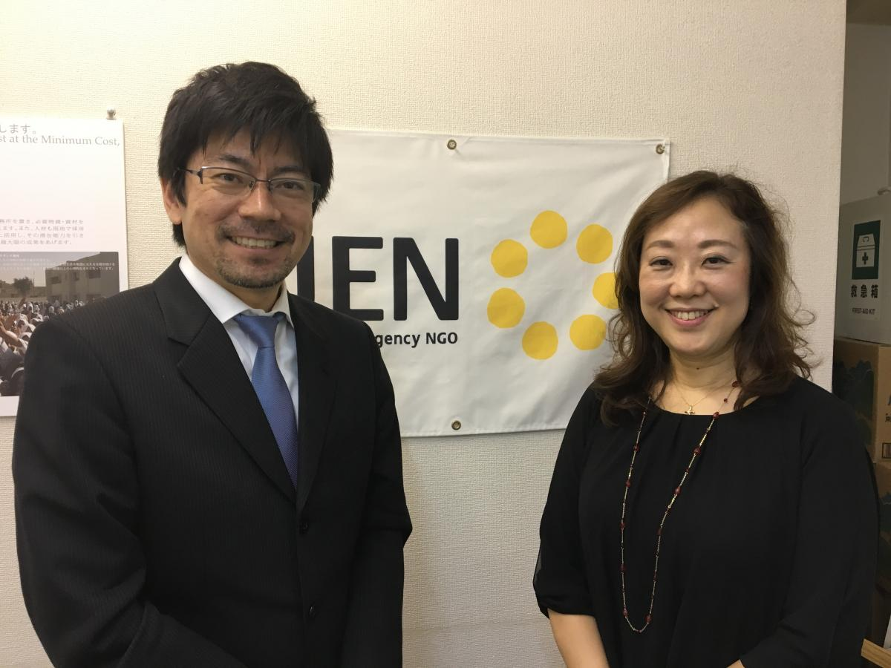

OCHAと日本
国連人道問題調整事務所(OCHA)はその発足以来、日本政府と緊密な協力関係にあります。特に日本政府は国際人道支援の根幹をなす「人間の安全保障」の推進を外交政策の柱の一つとして確立しています。こうした観点から、主にOCHAが国際人道支援活動の調整において担う役割の重要性を強く認識し、OCHAが担う機能や提供するサービスに対する支援を表明しています。（外務省、「我が国の人道支援方針」参照）
こうしたパートナーシップの一環として、「世界人道サミット 北・南東アジア地域準備会合」を、OCHA、外務省、そしてインドネシア政府と共催しました（2014年７月、於 東京）。これは2016年にトルコのイスタンブールで開催される「世界人道サミット」に先立って開催されたもので、OCHAは同サミットの事務局を務めています。日本政府からは岸田文雄外務大臣ご臨席のもと、ヴァレリー・エイモス国連事務次長（人道問題担当）をはじめ、当該地域の災害や人道支援関係者など100名以上が参加し、将来に向けた国際人道システムのあり方を議論しました。
またこれに合わせて、国際協力機構 (JICA) と業務協力協定 (MOU) も締結しました。主に開発途上国政府による災害対応能力向上支援や、知見・高い知見や専門性を有する人材を活かした緊急援助の実現、援助調整への積極的な参加や、人道支援活動を支えるツールやサービスの開発など、両者の連携強化を通じて今後さらなる日本の貢献が期待されます。
さらに自然災害分野では、東日本大震災等で自ら被災し、また国際支援を受け入れた経験から、その教訓を国内における被災者のための緊急支援体制造りに適用するとともに国際社会でも共有し、国際人道支援活動の強化に結び付けて行くことも日本に強く期待されています。特にこの関連では、OCHAもメンバーとなっている「東日本大震災と国際人道支援研究会」が政策提言書を発表しています。
なお歴史的にもOCHAと日本は関係が深く、OCHAのトップである人道問題担当国連事務次長を、1996～98年には明石康氏、2001～03年には大島賢三氏と2人の日本人が務めています。明石氏は90年代にルワンダや周辺諸国で勃発した内戦を受けて、国連の政治的な役割を担う機構とより密接に協力して国際人道支援活動を行う必要性から、関連する政策の策定や、啓発活動の強化に尽力しました。一方大島氏は、就任当時アフリカの内戦やアフガニスタンやイラクなどが最大の関心事だった一方、気候変動等により大規模化・多発化しつつある自然災害への対応やそのための備えに対する意識向上に積極的に取り組みました。

日本によるOCHA及びOCHAが管理する人道基金への資金協力
日本は、OCHAやOCHAが管理する人道基金への拠出を通じて、政府ベースの二国間協力だけに留まらず、国際人道システムを強化することに大きく寄与しています。日本政府からはOCHAに対して2014年に約612万ドル、2015年には約878万ドルを拠出して頂きました。OCHAへの各国の拠出を示す下記の表が示す通り、日本は常に上位にランクされる重要なドナーの１つです。（詳しくはOCHA Donor Rankingをご参照下さい）


なお、OCHAが管理するグローバルな国連人道基金（Central Emergency Response Fund: CERF）への日本からの拠出額は2013年度は299万ドル、2014年度は160万ドル、2015年度は140万ドルです。
また現在、特定非営利活動法人ジェン (JEN) の木山啓子・共同代表理事が、CERFの活用について緊急援助調整官に提言等を行う「CERF諮問グループ」のメンバーを務めています。
詳しくはCERFのサイトへ>>